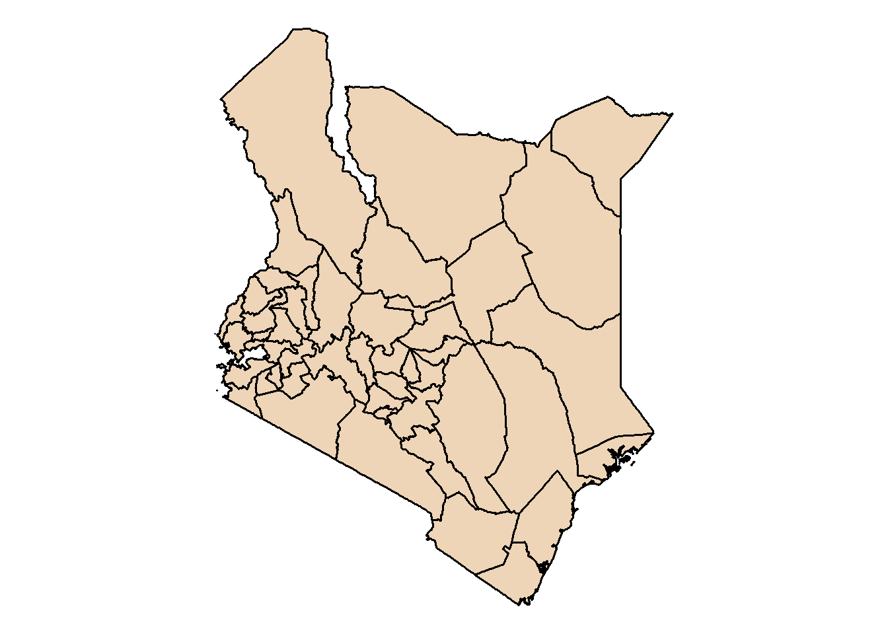
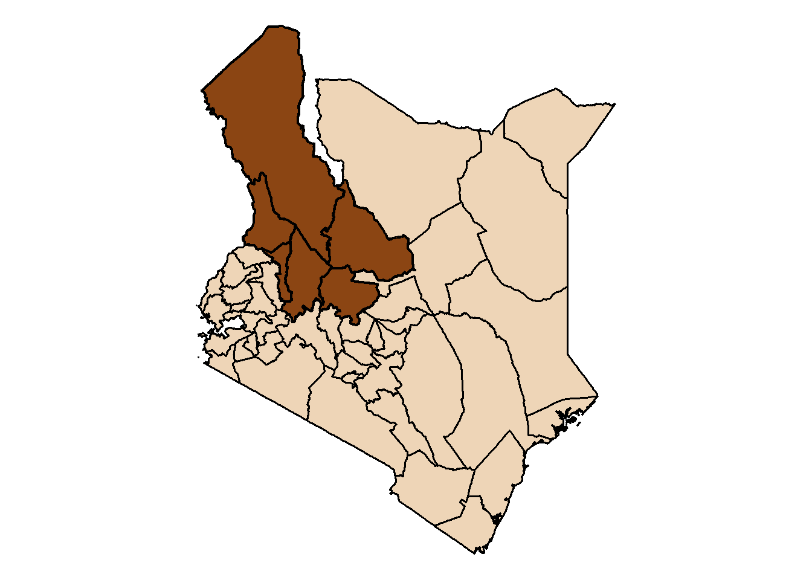
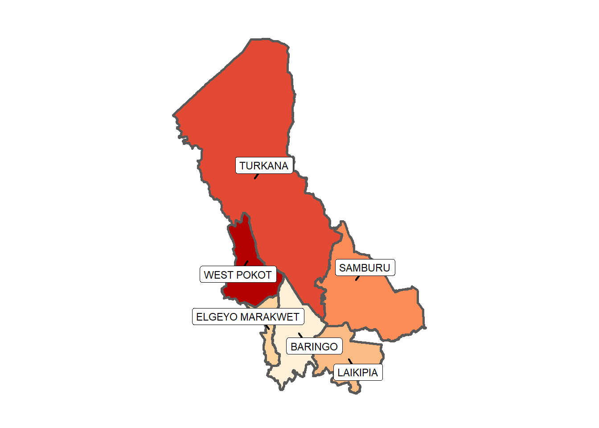

An assessment of the livestock numbers in the six counties declared to be ‘disturbed and dangerous’ in Kenya
RStudio
R
Tutorial
Blog
Author
William Okech
Published
November 28, 2023
Image created using “Bing Image Creator” with the prompt keywords “cows, sheep, indigenous cattle, running, dry savanna, river bed, traditional herdsman, nature photography, –ar 5:4 –style raw”
Introduction
In February 2023, the government of Kenya described six counties as “disturbed” and “dangerous.” This is because in the preceding six months, over 100 civilians and 16 police officers have lost their lives, as criminals engaged in banditry have terrorized the rural villages. One of the main causes of the conflict is livestock theft, therefore, my goal is to perform an exploratory data analysis of livestock numbers from the Kenya Population and Housing Census (2019) report.
library(tidyverse) # a collection of packages used to model, transform, and visualize datalibrary(rKenyaCensus) # tidy datasets obtained from the Kenya Population and Housing Census resultslibrary(patchwork) # combine separate ggplots into the same graphiclibrary(janitor) # initial data exploration and cleaning for a new data setlibrary(ggrepel)# repel overlapping text labelslibrary(ggthemes) # Extra Themes, Scales and Geoms for 'ggplot2'library(scales) # tools to override the default breaks, labels, transformations and palettes# install.packages("treemapify")library(treemapify) # allows the creation of treemaps in ggplot2library(sf) # simple features, a method to encode spatial vector data#install.packages("devtools")library(devtools) # helps to install packages not on CRAN#devtools::install_github("yutannihilation/ggsflabel")library(ggsflabel) # place labels on mapslibrary(knitr) # a tool for dynamic report generation in R#install.packages("kableExtra")library(kableExtra) # build common complex tables and manipulate table styles
Note: If you have package loading issues check the timeout with getOption(‘timeout’) and use options(timeout = ) to increase package loading time.
Section 2: Create a map of the “dangerous and disturbed” counties
The rKenyaCensus package includes a built-in county boundaries dataset to facilitate mapping of the various indicators in the Census. The required shapefile for this analysis is KenyaCounties_SHP
a) Sample plot of the map of Kenya
Code
# Load the shapefilekenya_counties_sf <-st_as_sf(KenyaCounties_SHP)# Plot the map of Kenyap0 <-ggplot(kenya_counties_sf) +geom_sf(fill ="bisque2", linewidth =0.6, color ="black") +theme_void()p0

b) Highlight the dangerous and disturbed counties in Kenya
Code
# First, remove the "/" from the county nameskenya_counties_sf$County <-gsub("/", " ", kenya_counties_sf$County)# Select the six counties to highlighthighlight_counties <-c("TURKANA", "WEST POKOT", "ELGEYO MARAKWET", "BARINGO", "LAIKIPIA", "SAMBURU")# Filter the counties dataset to only include the highlighted countieshighlighted <- kenya_counties_sf %>%filter(County %in% highlight_counties)# Plot the highlighted counties in the mapp1 <-ggplot() +geom_sf(data = kenya_counties_sf, fill ="bisque2", linewidth =0.6, color ="black") +geom_sf(data = highlighted, fill ="chocolate4", linewidth =0.8, color ="black") +theme_void()p1

c) Plot only the required counties
Code
p2 <-ggplot(data = highlighted) +geom_sf(aes(fill = County), linewidth =1, show.legend =FALSE) +geom_label_repel(aes(label = County, geometry = geometry), size =3,stat ="sf_coordinates",force=10, # force of repulsion between overlapping text labelsseed =1,segment.size =0.75,min.segment.length=0) +scale_fill_brewer(palette ="OrRd") +labs(title ="",caption ="") +theme(plot.title =element_text(family ="Helvetica",size =10, hjust =0.5),legend.title =element_blank(),legend.position ="none",plot.caption =element_text(family ="Helvetica",size =12)) +theme_void() p2

Code
# Notes: geom_label_repel() with geometry and stat defined can be used as an # alternative to geom_sf_label_repel()
d) Combine the plots using patchwork to clearly highlight the counties of interest
Section 3: Load the livestock data from the census report and generate the dataframes required for analysis.
a) View the data available in the data catalogue
Code
data("DataCatalogue")
b) Load the livestock data
Here, pastoral livestock are defined as sheep, goats, and indigenous cattle.
Code
# Select the livestock data from the census reportdf_livestock <- V4_T2.24livestock <- df_livestock[2:393, ]livestock <- livestock %>%clean_names()# Remove the "/" from the county names in the datasetlivestock$county <-gsub("/", " ", livestock$county)livestock$sub_county <-gsub("/", " ", livestock$sub_county)# Select the variables of interest from the dataset# These include the county, subcounty, land area, number of farming households, # sheep, goats, and indigenous cattle.# New variables listed below include:# pasto_livestock is the total number of sheep, goats, and indigenous cattle# ind_cattle_household is the number of indigenous cattle per household# goats_household is the number of goats per household# sheep_household is the number of sheep per household# pasto_livestock_household is the number of pastoral livestock per householdlivestock_select <- livestock %>%select(county, sub_county, admin_area, farming, sheep, goats, indigenous_cattle) %>%mutate(pasto_livestock = sheep + goats + indigenous_cattle) %>%mutate(ind_cattle_household =round(indigenous_cattle/farming)) %>%mutate(goats_household =round(goats/farming)) %>%mutate(sheep_household =round(sheep/farming)) %>%mutate(pasto_livestock_household =round(pasto_livestock/farming))
c) Filter data for the selected “disturbed and dangerous” counties
Code
# Select the data for the "dangerous and disturbed" countiesdan_dist <-c("TURKANA", "WEST POKOT", "ELGEYO MARAKWET", "BARINGO", "LAIKIPIA", "SAMBURU")livestock_select_county <- livestock_select %>%filter(admin_area =="County") %>%filter(county %in% dan_dist)# Select subcounty data for the "disturbed and dangerous" countieslivestock_select_subcounty <- livestock_select %>%filter(admin_area =="SubCounty") %>%filter(county %in% dan_dist)# Create an area dataset for the "dangerous and disturbed" countiesdf_land_area <- V1_T2.7land_area <- df_land_area[2:396,]land_area <- land_area %>%clean_names()
Code
# Create a function to remove the "/", " County" from label, and change the label to UPPERCASEclean_county_names <-function(dataframe, column_name) { dataframe[[column_name]] <-toupper(gsub("/", " ", gsub(" County", "", dataframe[[column_name]])))return(dataframe)}land_area <-clean_county_names(land_area, 'county')land_area <-clean_county_names(land_area, 'sub_county')# The code above does the processes listed below:# land_area$county <- gsub("/", " ", land_area$county)# land_area$county <- gsub(" County", "", land_area$county)# land_area$county <- toupper(land_area$county)# land_area$sub_county <- toupper(land_area$sub_county)
Code
# Obtain the area data for "disturbed and dangerous" countiesland_area_county <- land_area %>%filter(admin_area =="County") %>%select(county, land_area_in_sq_km) %>%filter(county %in% dan_dist)# Get the subcounty area data for "disturbed and dangerous" countiesland_area_subcounty <- land_area %>%filter(admin_area =="SubCounty") %>%select(county, sub_county, land_area_in_sq_km) %>%filter(county %in% dan_dist) %>%select(-county)
d) Create the final datasets to be used for analysis. Use inner_join() and creating new variables.
Code
# Create a county dataset with area and livestock numbers for the disturbed and dangerous regionslivestock_area_county <-inner_join(livestock_select_county, land_area_county, by ="county")# New variables listed below include:# ind_cattle_area is the number of indigenous cattle per area_in_sq_km# goats_area is the number of goats per household per area_in_sq_km# sheep_area is the number of sheep per area_in_sq_km# pasto_livestock_area is the number of pastoral livestock per area_in_sq_kmlivestock_area_county <- livestock_area_county %>%mutate(ind_cattle_area =round(indigenous_cattle/land_area_in_sq_km),sheep_area =round(sheep/land_area_in_sq_km),goats_area =round(goats/land_area_in_sq_km),pasto_livestock_area =round(pasto_livestock/land_area_in_sq_km))# Create a subcounty dataset with area and livestock numbers# for the disturbed and dangerous regionslivestock_area_subcounty <-inner_join(livestock_select_subcounty, land_area_subcounty, by ="sub_county")# New variables listed below include:# ind_cattle_area is the number of indigenous cattle per area_in_sq_km# goats_area is the number of goats per household per area_in_sq_km# sheep_area is the number of sheep per area_in_sq_km# pasto_livestock_area is the number of pastoral livestock per area_in_sq_kmlivestock_area_subcounty <- livestock_area_subcounty %>%mutate(ind_cattle_area =round(indigenous_cattle/land_area_in_sq_km),sheep_area =round(sheep/land_area_in_sq_km),goats_area =round(goats/land_area_in_sq_km),pasto_livestock_area =round(pasto_livestock/land_area_in_sq_km))
Section 4: Create a table with land area (sq. km) for the six counties
These six counties cover approximately one-fifth (1/5) of Kenya
In this post, I have assessed the pastoral livestock (indigenous cattle, sheep, and goats) populations in the Kenyan counties described as “disturbed and dangerous.” A major contributor to this classification is the banditry, livestock theft, and limited amounts of pasture and water available to livestock owners. To get a better sense of the number of households engaged in farming and the pastoral livestock populations in these counties, I performed an exploratory data analysis and visualized my results.
Key findings from the study were that: 1. Turkana and Samburu had some of the highest numbers of pastoral livestock, yet they had the fewest numbers of households engaged in farming. This meant that both these counties had the highest average livestock to farming household ratios in the region (Turkana: 55 per household and Samburu: 36 per household). 2. The top three (3) subcounties with the highest average ratios of pastoral livestock to farming households were in Turkana. They included Turkana East (126), Kibish (96), and Turkana West (56). Surprisingly, counties such as Keiyo North (4), Koibatek (4), and Nyahururu (4) had very low ratios of pastoral livestock to farming household ratios despite having relatively high numbers of farming households. This may have resulted from the unsuitability of the land for grazing animals, small average land sizes per farming household, a switch to exotic dairy and beef livestock, or simply, a preference for crop, rather than livestock farming.
In the next analysis, I will assess the livestock numbers per area (square kilometers), the numbers of indigenous cattle, sheep, and goats in every county and subcounty, as well as the other animal husbandry and/or crop farming activities that take place in the region. The reader is encouraged to use this code and data package (rKenyaCensus) to come up with their own analyses to share with the world.